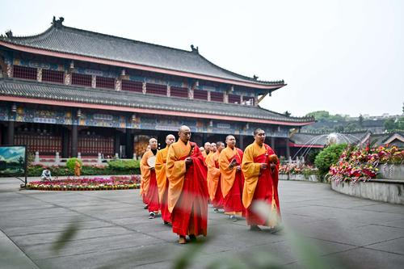

景点名称：大佛禅院
推荐指数：★★★★
简介：大佛禅院，作为朝拜峨眉山的第一门户，是前往峨眉祈福、朝拜的第一站，也是必去之地。大佛禅院原名大佛寺，位于峨眉山市区东郊，交通方便，气势恢弘，建筑结构缜密，拥有多重大殿和诸多禅房。峨眉山的寺庙极少商业气息，没人四处游说你捐钱、买香火、买纪念品。游人和香客可以根据自己的意愿布施、上香、叩拜，丝毫不会受到干扰，让人感觉这才是真正的回归。峨眉山大佛禅院位于峨眉山东郊，整个寺庙富丽堂皇、雄姿宏伟、气势磅礴，既是去峨眉山佛界祈福、朝圣的起点;又是公众游客去峨眉山旅游进入名山的起点。